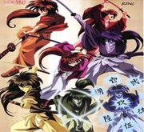
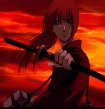

Hiten mitsurugi
 De: La Frikipedia, la enciclopedia extremadamente seria.
De: La Frikipedia, la enciclopedia extremadamente seria.
«¡¡¡oh!!! ¡¡¡que metrosexual!!!»
~ Cualquiera sobre Kenshin.
«¡¡¡¡Este tipo me robo mi técnica!!!!»
~ Ken Masters sobre el ryu-sho-sen de Kenshin.
«Jojolete, come torta, y tu cuchillo no corta...»
~ Shishio burlándose de las técnicas de Kenshin.
«yo estoy entrenando para ser el seijuro hiko numero MMMCCCLXXVIII»
~ zero sobre el estilo hiten mitsurugi.
 Kneshin mostrando que tan metrosexuales son sus tecnicas
El Hiten Mitsurugi Ryū, (飛天御剣流 Te meto cuchillo) es un estilo de esgrima japonés (ken-do) que se encabeza en la lista de los más letales entre los estilos-y-técnicas-con-nombres-tan-largos-como-para-que-el-enemigo-te-parta-en-cuatro-antes-que-termines-de-nombrarla.
Este el estilo lo usaba el metrosexual con pinta de gay de Kenshin Himura de Rurouni Kenshin. Significa literalmente "estilo del honorable hombre que folla vuela por los aires" , con este estilo Kenshin puede follar vencer a todos sus oponentes y seguir siendo el mas metrosexual de todos sin ningún esfuerzo.
Historia
 Kenshin cuando aun era metrosexual y recibia su nueva espada
Bueno, como ya vieron en la historia de Rurouni Kenshin supieron que cuando iba de esclavo sexual de un grupo de pedófilas, adictas al shotacom, lo rescató quien se convertiría en su estilista, Seijuro Hiko (清十郎 比古 Maestro Borrachón), bueno, este fue el que le enseño el Hiten Mitsurugi para que hiciera los cortes de cabello más a la moda sin perder el maquillaje ni la metrosexualidad.
Cabe destacar que este Seijuro Hiko no era el único estilista de esta escuela. El Hiten Mitsurugi ya había tenido otros 12 estilista antes siendo el actual el numero 13 pero a Kenshin no le interesó y se fue a la guerra a pelear para demostrar que era el metrosexual más macho, aunque al final su espada terminó con el filo volteado.
«¿Y cuándo me enseñarás a hacer que la cascada vaya hacia arriba?»
~ Kenshin consultando a su maestro por unas técnicas que vio en la tele.
«Cuando inventen el secador de pelo.»
~ Seijuro negándose a enseñar todo lo que sabe.
Técnicas
Para algo servirá este articulo, así que pasare a mostrar las técnicas de este estilo.
- Ryu tsui sen (ráfaga del martillo del dragón)
de cuando mierda lo dragones llevan martillo?):esta técnica consiste en saltar y caer con la espada como si fuera un martillo, que original.
- Ryu tsui sen zan(ráfaga del martillo del dragón asesino): lo mismo pero con la espada en punta para darle mas originalidad.
- Ryu kan sen (ráfaga del dragón envolvente): esta técnica consiste en girar como un Bayblade y terminando golpeando la espalda del enemigo, ademas de quedar mareado.
- Ryu kan sen kogarashi (no se que cojones significa kogarashi, el que sepa por favor edite aquí, jaja significa vientos invernales xD): la misma mierda que antes sólo que ahora le pega por delante (el cuello no vayan a pensar mal).
- Ryu kan sen tsumuji (ráfaga del dragón envolvente/torbellino):otra vez lo mismo que antes pero en el aire y en vertical , como pueden ver, este estilo tiene técnicas muy "originales".
- Ryu kan sen arashi (ráfaga del dragón envolvente/tormenta):acá Kenshin salta dando mortales y haciendo lo mismo que el ryu tsui sen pero con mas estilo.
- Do ryu sen (ráfaga del dragón de tierra): en esta Kenshin golpea al suelo rompiéndolo y disparando pedazos de tierra al oponente para ensuciarlo y arruinarle el maquillaje.
- Ryu sou sen (ráfaga del nido del dragón): sólo la ocupa cuando se enoja , solo da espadazos para quien le llege como si fuera un pendejo con rabieta.
- Sou ryu sen (ráfaga del dragón doble): es un battoujutsu (jutsu de desenfundar y
follar cortar al enemigo en un segundo, sólo que como la espada de Kenshin tiene el filo invertido, esta se desenfunda mas lento , para que siga siendo una técnica válida, Kenshin también usa la funda para golpear así que le da 2 golpes aumentando el placer daño al enemigo.
- Sou ryu sen ikazuchi (ráfaga del dragón doble /rayo): es como la anterior pero primero se golpea con la espada aun enfundada y cuando se da el golpe recién se desenfunda para
follar golpear de improvisto al oponente.
- Ryu sho sen (ráfaga del dragón ascendente): a pesar de la época ,parece ser que a Kenshin le gustaba street figther asi que imitando a sus personajes favoritos salio esta técnica, que no es nada mas que un sho-ryu-ken con una espada.
- Hi ryu sen (ráfaga del dragón volador):como Kenshin , a pesar de ser el mas metro sexual de todos ,era un simple humano así que no lanzaba poderes al estilo Zoro o Ichigo, asi que no le quedo nada mejor que lanzar la espada para golpear de lejos.
esta son las técnicas básicas de este estilo ,ahora pasaremos al ougi (folladura técnica secreta) del estilo
hiten mitsurugi ryu ougi
ahora aca estan las técnicas que faltan
- kuzu ryu sen (ráfaga del dragón policefálico
cabeza de poli/ráfaga del dragón de las 9 cabezas): técnica sin uso aparente, que sirve para practicar el ougi y follar a varias personas a la vez , eta técnica golpea los 9 puntos vitales descuartizando al oponente de inmediato, pero como Kenshin es un gay redimido que ya no mata , solo ta manda a tomar viento fresco.
- ougi : amakakeru ryu no hirameki (destello del dragón que
folla por los aires): técnica final del estilo y es la mas metrosexual del universo , todo aquel que la aprenda se volverá el más metrosexual de todos sin importar que tan inútil sea al principio , consiste en correr hacia tu oponente , pisar con el pie izquierdo ( no , no trae mala suerte)y desenfundar a la velocidad de la luz para follar golpear a tu oponente mandarlo a la mierda lejos , lo malo es que despues de hacerla te quedas agotado y se te corre el maquillaje , pero , descuida que con la pose que quedas , seguiras siendo el mas metrosexual.
- amakakeru ryu no kiba(garras del dragon que surca los cielos): si tu oponente no admira tu metrosexualidad (o es ciego) y te llega a bloquear el golpe , se abrira un vacio espacial que paralizara a tu oponente (que fantastico) mientras das la vuelta
salir por las patas y prepara un segundo golpe que tiene la fuerza del primero con el segundo terminando por embarazar golpear a tu oponente y mandarlo 10 metros en el aire .Este efecto se llama asi por lo que deijo Seijuro Hiko cuando estaba borracho "aunque el oponente esquive las garras del dragon que folla vuela por los aires , los viento huracanado le impediran moverse quedando destrozado por los cojones las garras"
Frikipedia 2005-2016, Licencia
GFDL 1.2 - Extraído por FrikiLeaks